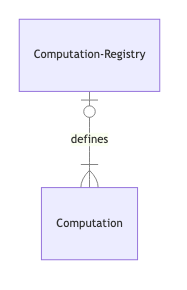
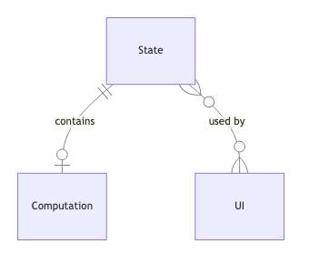

Discrete event simulation 1.0.4
Simulation of discrete event, based on a scheduler engine.
Topics
Namespaces
automaton-simulation-de.control
Control is a higher level API for simulation scheduler. With a control state you have a pointer to one iteration that you can control with play!, next!, move-x …
Public variables and functions:
automaton-simulation-de.control.computation
Computation is responsible for execution/storage of scheduler so that it can respond to questions about simulation. This namespace consists of protocol that defines core questions to answer and use-case functions of that protocol
Public variables and functions:
automaton-simulation-de.control.computation.impl.chunk
Loads chunk of scheduler responses upfront
Public variables and functions:
automaton-simulation-de.control.computation.impl.direct
Naive implementation of computation. It directly executes scheduler each time it’s asked for an answer
Public variables and functions:
automaton-simulation-de.control.computation.registry
Contains all the default possible computation implementation to choose from For diagram see 
Public variables and functions:
automaton-simulation-de.control.computation.response
Computation response is consisting of status and scheduler response. Status informs about how the response is related to the query asked to computation. :success <- it is as expected :no-next <- it is not what was asked, but it is impossible to continue further in simulation (e.g. model-end, no future events…) :timeout <- it is not what was asked and it can be continued to search, but it hit a limit of time as it may be endless simulation or question could never be answered :internal-error <- The response may be corrupted as there was some problem with execution itself
automaton-simulation-de.control.state
State containing information about and for control (control settings, current-iteration, computation-implementation to use…) For diagram see 
Public variables and functions:
automaton-simulation-de.entity
An entity is a part of the model living in the state with its lifecycle managed.
Public variables and functions:
automaton-simulation-de.predicates
Predicates are functions that takes as a param a value and return true if the value matches predicate, false otherwise and nil if comparison can’t be done. Predicate functions can be expressed via a query language represented with vector. This namespace is about managing that language
automaton-simulation-de.predicates.composed-predicates
Composed predicates accept other predicates and return value based on their value
Public variables and functions:
automaton-simulation-de.predicates.equality-predicates
Equality predicates compare values and return boolean based on the result
Public variables and functions:
automaton-simulation-de.rc.impl.preemption-policy.base
Basic preemption policies.
Public variables and functions:
automaton-simulation-de.rc.impl.preemption-policy.factory
Factory for preemption-policy.
Public variables and functions:
automaton-simulation-de.rc.impl.preemption-policy.registry
Registry for preemption-policy.
automaton-simulation-de.rc.impl.resource
A resource is a limited quantity of items that are used by entities as they proceed through the system. A resource has a capacity that governs the total quantity of items that may be available. All the items in the resource are homogeneous, meaning that they are indistinguishable. If an entity attempts to seize a resource that does not have any units available it must wait in a queue. It is often representing real world items that availability is limited (e.g. machine, wrench, …).
Public variables and functions:
automaton-simulation-de.rc.impl.resource.consumption
Resource consumption is what is happening when a resource is available and an entity seizing it.
automaton-simulation-de.rc.impl.resource.queue
The queue of a resource is containing all event execution which are blocked while waiting for a resource to be available.
Public variables and functions:
automaton-simulation-de.rc.impl.state
Store and update resource consumer informations in the ::sim-rc/resource key of the state. Assuming state is associative.
Public variables and functions:
automaton-simulation-de.rc.impl.unblocking-policy.base
The simple policies to unblock an event in the queue.
Public variables and functions:
automaton-simulation-de.rc.impl.unblocking-policy.factory
Factory to return the unblocking-policy.
Public variables and functions:
automaton-simulation-de.rc.impl.unblocking-policy.registry
Registry for unblocking-policy.
automaton-simulation-de.rc.preemption-policy
When the capacity is updated (through a failure or a capacity update), the preemption-policy is deciding which consumption should be stopped.
Public variables and functions:
automaton-simulation-de.rc.unblocking-policy
In a queue, the policy selects the next consumer that will be unblocked. (Each queue has its own policy).
Public variables and functions:
automaton-simulation-de.simulation-engine
Simulation is a technique that mimics a real system - and simplifies it, to learn something useful about it. Discrete event simulation is modeling a real system with discrete events.
automaton-simulation-de.simulation-engine.event
An event is an individual happening, taking place at a given moment. Each event is indivisible and instantaneous. The event execution is defined by its event type.
Public variables and functions:
automaton-simulation-de.simulation-engine.event-execution
An event execution is updating the state and may trigger some new events to be added in the future events. The result of the event execution could be dependent on the state or random variable.
Public variables and functions:
automaton-simulation-de.simulation-engine.event-return
What is returned by an event.
Public variables and functions:
automaton-simulation-de.simulation-engine.impl.built-in-sd.causality-broken
stopping-definition to stop when causality is broken.
Public variables and functions:
automaton-simulation-de.simulation-engine.impl.built-in-sd.execution-not-found
stopping-definition to stop when the execution of an event is not found in the registry.
Public variables and functions:
automaton-simulation-de.simulation-engine.impl.built-in-sd.failed-event-execution
stopping-definition to stop when an execution has raised an exception.
Public variables and functions:
automaton-simulation-de.simulation-engine.impl.built-in-sd.no-future-events
stopping-definition to stop when no future events exists anymore.
Public variables and functions:
automaton-simulation-de.simulation-engine.impl.built-in-sd.registry
built-in stopping-definition can create stopping-cause but they are not accessible for modellers, they are hard coded.
Public variables and functions:
automaton-simulation-de.simulation-engine.impl.built-in-sd.request-validation
Stops when the request is not valid.
Public variables and functions:
automaton-simulation-de.simulation-engine.impl.built-in-sd.response-validation
Stops when the response is not valid.
Public variables and functions:
automaton-simulation-de.simulation-engine.impl.event-registry
The event-registry contains event-execution.
Public variables and functions:
automaton-simulation-de.simulation-engine.impl.middleware.registry
Registry for middlewares associating a keyword to its middleware function.
Public variables and functions:
automaton-simulation-de.simulation-engine.impl.middleware.request-validation
Stops when the request is valid through inconsistency and schema. This criteria is built-in to this middleware as it is requiring the request knowledge. User stopping-criteria knows only snapshot.
Public variables and functions:
automaton-simulation-de.simulation-engine.impl.middleware.response-validation
Stops when the response is valid through inconsistency and schema. This criteria is built-in to this middleware as it is requiring the response knowledge. User stopping-criteria knows only snapshot.
Public variables and functions:
automaton-simulation-de.simulation-engine.impl.middleware.state-rendering
Middleware to render state.
Public variables and functions:
automaton-simulation-de.simulation-engine.impl.middleware.tapping
Middleware to tap response and requests.
Public variables and functions:
automaton-simulation-de.simulation-engine.impl.middlewares
Ordered list of middlewares.
Public variables and functions:
automaton-simulation-de.simulation-engine.impl.model
A simulation model gathers information required to run the simulation.
automaton-simulation-de.simulation-engine.impl.model-data
Model data is the data used as inputs to generate the model:
Public variables and functions:
automaton-simulation-de.simulation-engine.impl.ordering.registry
Registry for ordering.
automaton-simulation-de.simulation-engine.impl.registry
Gathers the registries of a simulation.
automaton-simulation-de.simulation-engine.impl.scheduler
The scheduler is working with a model describing the problem to solve.
Public variables and functions:
automaton-simulation-de.simulation-engine.impl.stopping-definition.bucket
stopping-definition to stop at a given bucket.
Public variables and functions:
automaton-simulation-de.simulation-engine.impl.stopping-definition.iteration-nth
stopping-definition to stop at a given iteration.
Public variables and functions:
automaton-simulation-de.simulation-engine.impl.stopping-definition.now
stopping-definition to stop right now.
Public variables and functions:
automaton-simulation-de.simulation-engine.impl.stopping-definition.registry
Stopping registry contains all stopping-definition.
Public variables and functions:
automaton-simulation-de.simulation-engine.impl.stopping-definition.state-contains
Public variables and functions:
automaton-simulation-de.simulation-engine.impl.stopping.cause
A reason why the scheduler stops. A stopping-cause contains:
Public variables and functions:
automaton-simulation-de.simulation-engine.impl.stopping.criteria
Declares a stopping-criteria to instantiate stopping-definitions, it precises the params necessary for stopping-evaluation. The data are:
Public variables and functions:
automaton-simulation-de.simulation-engine.impl.stopping.definition
A stopping-definition defines what could cause the scheduler to stop.
automaton-simulation-de.simulation-engine.middleware
Defines a middleware, wrapping an handler to prepare the request before the handler execution, and modify the response after handler execution. Note that a middleware wrapping an handler returns a new handler, that can be wrapped again.
automaton-simulation-de.simulation-engine.ordering
Event ordering is a part of the event registry meant to sort the future events.
Public variables and functions:
automaton-simulation-de.simulation-engine.orderings
Sequence of ordering.
Public variables and functions:
automaton-simulation-de.simulation-engine.request
Build a request for an handler.
Public variables and functions:
automaton-simulation-de.simulation-engine.response
Is a response of scheduler.
Public variables and functions:
automaton-simulation-de.simulation-engine.snapshot
A scheduler snapshot is a consistent set of data for the scheduler. It is containing the simulation state, past events and future events and iteration number scheduler snapshot is identified with an id property and is related to exactly one date. Past and Future events are sorted collection of events.
Public variables and functions:
automaton-simulation-de.transformation
Transformation contains useful functions for rendering * See transformation big-picture
{kind=link}
Public variables and functions:
- keep-events
- keep-snapshot
- keep-snapshot-entity
- keep-snapshot-events
- keep-snapshot-events-based-state
- keep-snapshot-events-based-state-entity
- keep-snapshot-events-based-state-resource
- keep-snapshot-future-events
- keep-snapshot-past-events
- keep-snapshot-resource
- keep-snapshot-state
- keep-snapshot-state-entity
- keep-snapshot-state-resource
- keep-snapshots-state
- keep-state
- keep-state-entity
- keep-state-resource
- keep-stopping-causes
- keep-stopping-causes-by-model-end
- keep-stopping-causes-by-stopping-definition